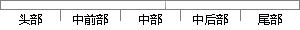

忘记密码主要是老用户登录的时候忘记密码；
片段位置图

相似结果|
相似片段 1：，如果用户是非法用户，则需要禁止用户的登录。对于登录控件而言，需要两个提示页面，这两个提示页面包括发送密码页面和错误信息页面。发送密码页面主要是用于发送忘记密码的用户的密码到用户的邮箱中，这样用户就能够获取相应的信息以登录网站；而错误信息页面主要是用于提示用户输入的次数超过限定的次数，禁止用户再次输入。
相似片段 2：·忘记密码页面：提供用户索取密码后提示的页面。·用户信息页面：提供用户登录成功后的个人信息页面。在这其中最主要的是登录页面和忘记密码页面，其中很多的函数的实现都需要在这个页面实现，而其他页面主要是
相似片段 3：密码后提示的页面。·用户信息页面：提供用户登录成功后的个人信息页面。在这其中最主要的是登录页面和忘记密码页面，其中很多的函数的实现都需要在这个页面实现，而其他页面主要是作为提示页面存在的。该模块需要使用
相似片段 4：功能的测试方法及过程登录功能的基本信息和逻辑情况：系统的登录功能主要是让系统的用户在需要登录系统的时候，对用户输入的密码进行检验，看看用户输入的密码是否正确，另外，还要对用户的权限进行验证，以便对用户
相似片段 5：完成后就可以登录系统进行商品浏览，登录的模块主要检测登录的用户名及密码是否正确，如果正确才能进行下面的操作，如果没有用户名则进行注册，如果忘记密码可以选择找回密码并且重置密码处理。用户的登陆处理可以为用户在购物车中保存商品，每次登陆都可以查看购物车中的商品。
|
※ 片段修改建议 ※
近似词参考：- 忘记：健忘 忘掉 遗忘 忘怀
- 密码：暗码
- 主要：首要 重要
- 要是：如果
- 时候：时辰 时刻 时间
- 忘记：健忘 忘掉 遗忘 忘怀
- 密码：暗码
系统自动生成语句：健忘暗码首要是老用户登录的时辰健忘暗码；
注：本片段修改建议为系统自动生成，仅供参考。